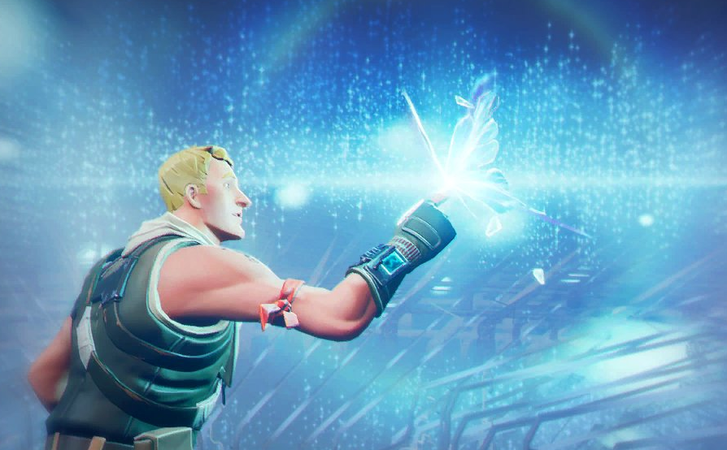

Temp. 6
El Cub neix del llac Loot, no gotejant d'aigua sinó de l'immens poder que absorbeix. Aleshores es revela el pla del Cub: conquerir l'illa amb els dimonis que estava generant i obrir un portal perquè en vinguin més. Després que nosaltres, els Loopers de l'Illa, lluitem contra les hordes, la poderosa llum del Llac supera la foscor del Cub; fent-lo explotar.

Una papallona porta a tothom a l'illa a l'intermedi, els circuits exposats de l'existència, per protegir-nos de la fusió del cub. Mentrestant, a les profunditats del Bosc de les Lamentacions, els que contenien el meteor per a l'anàlisi segueixen vivint sota l'illa. Intenten recrear la llàgrima del Visitant a temps fent quatre túnels, connectats entre si mitjançant portals.